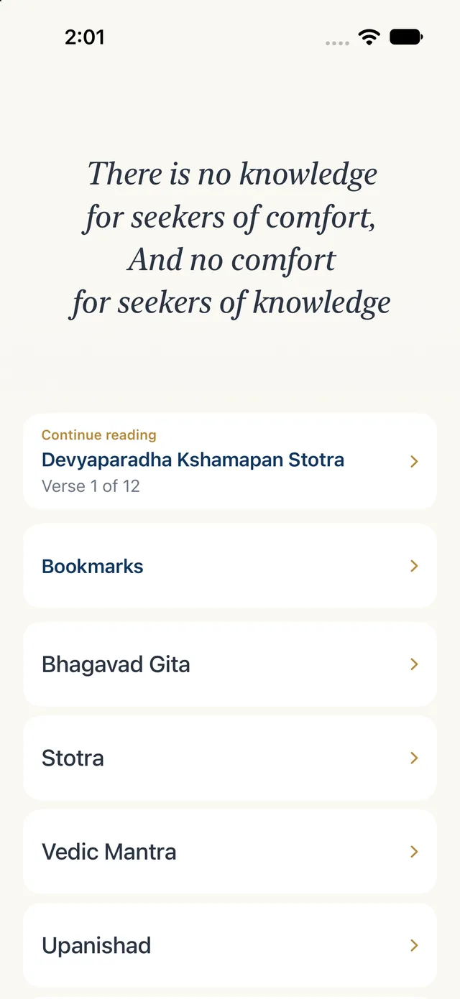
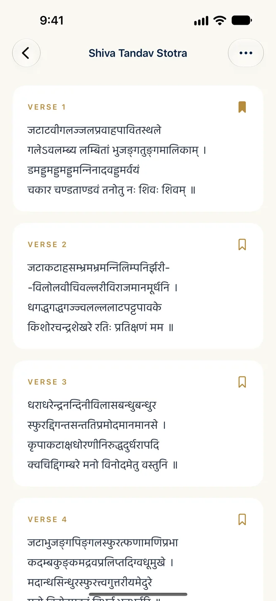
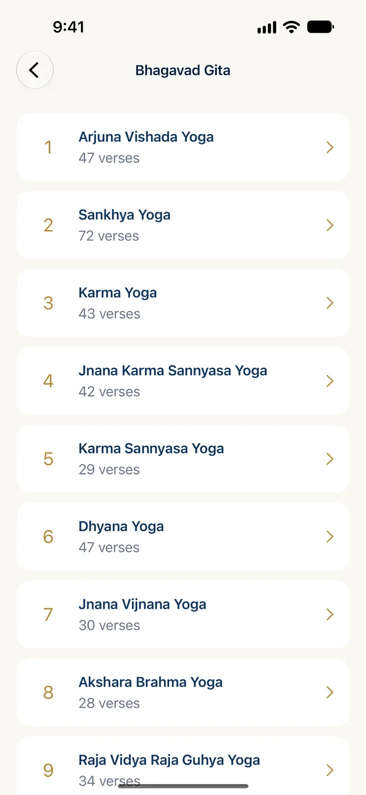
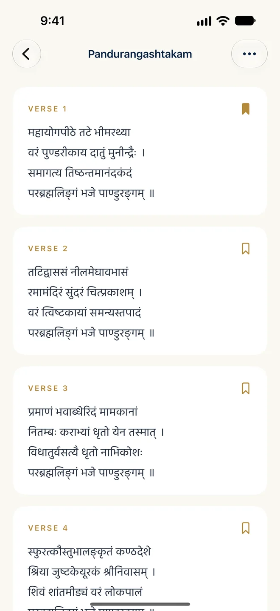
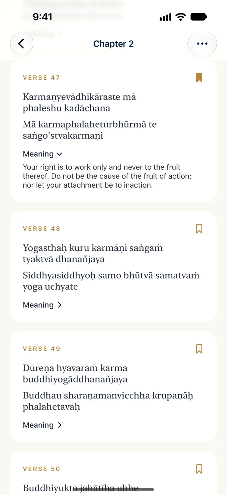
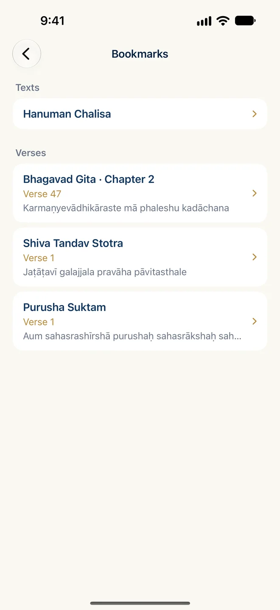
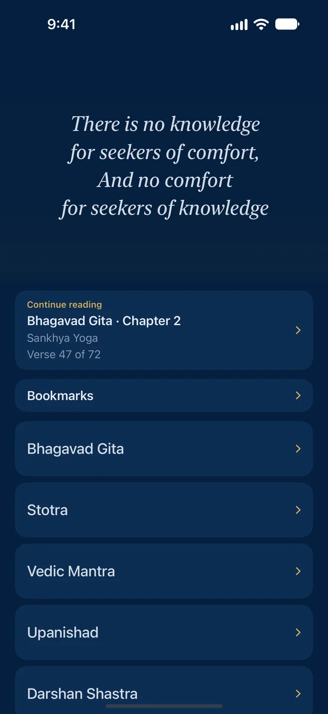

Read your way
Devanagari or English, with meanings
Switch any text between Devanagari and accented English transliteration. Where a meaning is available, tap Meaning under the verse to read it in English.
A growing library of Vedic shlokas, mantras, hymns, prayers and the works of great saints, within reach wherever you are.



The Bhagavad Gita, stotras, Vedic mantras, Upanishads and prayers, in one calm place.
Switch any text between Devanagari and accented English transliteration. Where a meaning is available, tap Meaning under the verse to read it in English.


Bookmark a whole text or a single verse, and arrange them in the order you like.

Print one section or a whole text, with Devanagari and transliteration on the page.

There is no knowledge for seekers of comfort,
and no comfort for seekers of knowledge.
Smaran means remembrance, or meditating on the Divine. The library honours the saints,
sages and teachers whose works it preserves, and the generations who have passed them on.